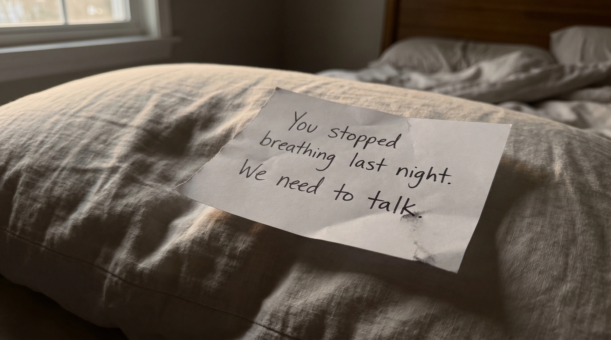
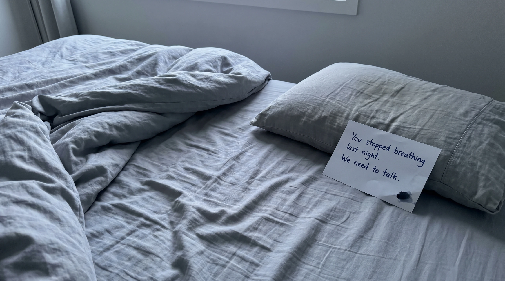
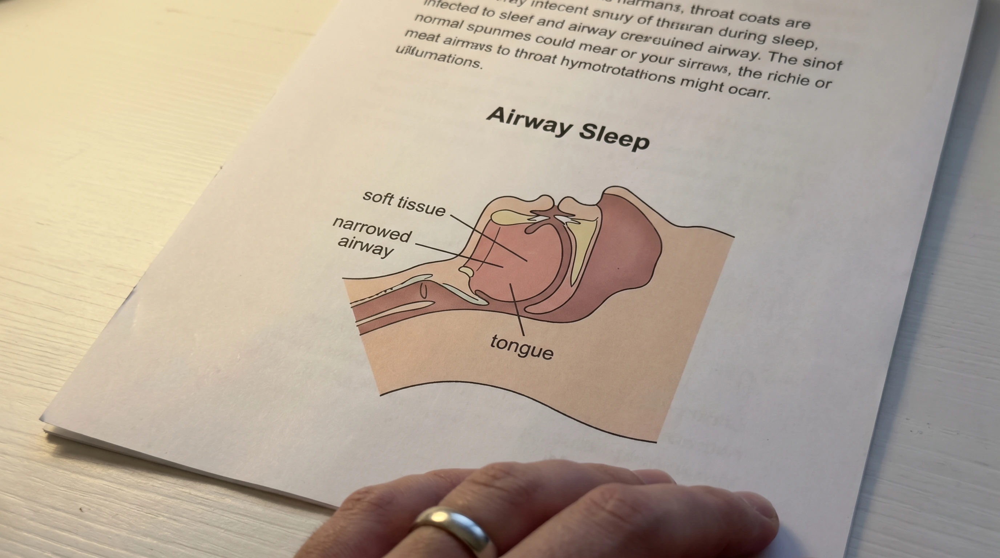
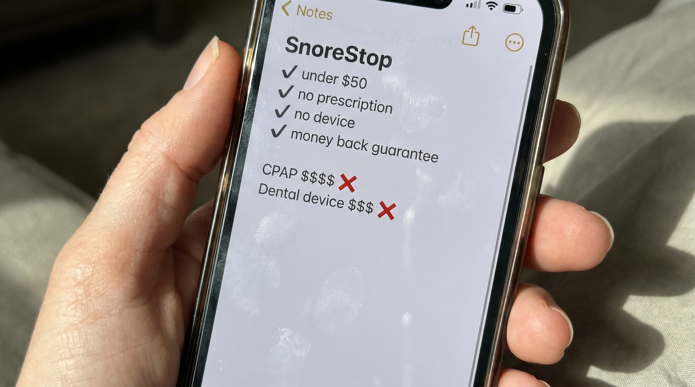
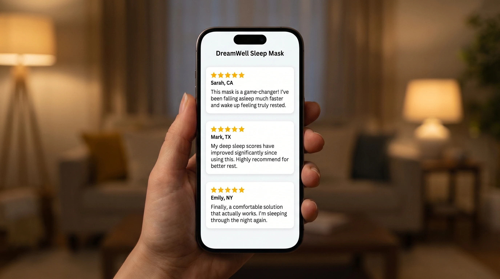
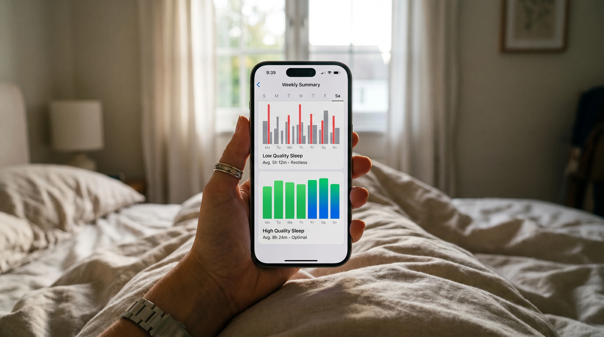

I came back from the bathroom and there was a note on my pillow.
Her handwriting. Rushed, slightly uneven, written in the dark from the look of it.
"You stopped breathing last night. We need to talk."
I stood in the doorway reading it twice and my first instinct, I'm embarrassed to say, was to wonder if she'd overreacted. Maybe she'd half dreamed it. Maybe it was just one of those moments that feels alarming at 3am and turns out to be nothing in the morning.
Then I looked at the paper more carefully. The ink was smeared at the bottom corner. Her hand had been shaking when she wrote it.
I want to tell you what I found after that morning because I think a lot of men are living inside the same comfortable story I had built for myself and that note ended mine in about four seconds. The fix I eventually found was so simple after everything I went through that I'm still angry about how long it took me to get there. It's in what I wrote below.
It started as something I ignored
My snoring had been going on for years.
Long enough that we'd both quietly stopped talking about it. She'd mentioned it early on, I'd bought strips, they didn't do much, we both moved on and I told myself it was just one of those things. Background noise. Harmless.
She stopped bringing it up after year three and I took that as confirmation that it had stopped being a problem.
I understand now that she stopped bringing it up because she'd stopped expecting it to change. Those are not the same thing and I spent nine years confusing them.
What I hadn't understood, what I had completely failed to notice, is what the snoring was actually doing. Not just to her sleep, though it was destroying that too. To me. To my body. Every single night while I felt completely fine and had no idea.

What she'd been doing that I didn't know about
She hadn't just been losing sleep.
She told me this after the note, after the conversation we finally had. For seven months she had been sleeping with her hand on my chest. Not out of affection, though I had thought that's what it was the entire time. Out of fear.
She'd been lying awake in the dark monitoring my breathing because my snoring had started doing something she couldn't ignore.
It would just stop.
The snoring would cut out completely and the silence would wake her immediately because the silence was wrong. And she'd lie there watching my chest and counting. One two three four five. Waiting for me to start again.
Sometimes I'd gasp. Sometimes I'd just roll over. Every time she'd lie there afterward for an hour unable to go back to sleep because her nervous system had just spent five seconds in genuine alarm and wasn't ready to stand down.
She had been doing this for seven months and hadn't told me because she didn't know how to say it without frightening me.
The note was her finally deciding that frightening me was better than continuing not to.
"She'd been lying awake in the dark counting to five, waiting for me to start breathing again. Seven months. I had absolutely no idea."
The part I've never said out loud
I read that note five times before I went back into the bedroom.
She was awake, sitting up, watching me come in. And I looked at her face and understood something I hadn't understood in twelve years of marriage. This woman had been quietly terrified about something happening to me in the night and had carried that completely alone because she didn't want to worry me and didn't know what to do with it.
She looked exhausted in a way that had nothing to do with that particular night.
I sat down on the edge of the bed and asked her to tell me everything. She talked for a long time. About the counting. About the nights she'd lain there after one of the episodes just listening to make sure. About the morning she'd searched something on her phone at 4am and read things that had scared her badly and that she hadn't been able to share with me because I'd seemed so unconcerned about the snoring in general.
She had been carrying all of that by herself because I had decided snoring was harmless and she had accepted that my comfort with the situation mattered more than her fear about it.
I had done that. That's the sentence I sat with for a long time after she finished talking.
What I started reading that morning
I didn't go to work that day.
I sat with my phone and started reading everything I could find about what actually happens to a body when snoring gets bad enough that the breathing stops. What the medical term for it is. What it does over months and years. What builds quietly in a body that goes through this every single night while the person sleeping feels completely fine because they are asleep and cannot feel any of it happening.
I felt completely fine. I want to be clear about that. I had felt fine for years. I woke up every morning feeling like a person who had slept adequately and I had built my entire understanding of my own health on that feeling.
What I read that morning told me that feeling fine meant nothing.
That the things happening during those stopped-breathing moments were invisible and cumulative and not the kind of thing that announces itself until it has been going on long enough to be serious. That a body can do this every night for years and feel completely normal in the morning while something very different is happening in the dark.
I read for three hours. I called in sick. I sat at the kitchen table with untouched coffee going cold next to me and read things I couldn't unknow and thought about twelve years of my wife lying next to something she'd tried to tell me about and me deciding it wasn't worth taking seriously.
What I found
I went in expecting the answer to be complicated and expensive.
Sleep study. CPAP machine. Dental device. Surgery possibly. Some combination of all of them and a long road getting there. I had resigned myself to whatever it was going to take because I was not in a position to weigh up the price after that morning.
What I actually found was nowhere near what I expected.
The snoring, when you understand the mechanism properly, is a throat problem. Not a nose problem, not a position problem, not a weight problem. The sound comes from soft tissue at the back of the throat partially relaxing during sleep and vibrating as air moves through the restricted airway. When it gets bad enough the airway doesn't just restrict. It closes. The breathing stops. The body jolts itself back. The cycle repeats every single night while you feel completely fine.
The fix that works on that specific problem works on the throat tissue directly.
There is a natural throat spray that coats the soft palate and throat, reducing the vibration that creates the sound and helping keep the airway open enough that the stopping doesn't happen. It has been in pharmacies since 1995, thirty years, used by over 250,000 people. No prescription, no machine, no mask, no device, nothing to charge or clean or strap to your face in the dark.
Two seconds before bed. That is the entire thing.
I sat there reading it and rereading it because the gap between what I had spent the morning reading and how simple the answer turned out to be was almost impossible to process. I read it a fourth time. Then I ordered it.
Why it actually works when everything else doesn't
Most snoring products fail because they address the wrong part of the problem entirely.
Nasal strips open the nasal passage. Chin straps hold the jaw in position. Positional pillows keep you off your back. White noise machines give the sound a soundtrack. None of these touch the actual source of what is happening, which is the soft tissue at the back of the throat relaxing enough during sleep to partially block the airway and vibrate as air tries to move through.
SnoreStop throat spray works directly on that tissue.
The natural formula coats the soft palate and throat, temporarily firming the tissue, reducing the vibration, keeping the airway open enough that the sound doesn't have the conditions it needs to happen. It doesn't redirect the problem or manage it from a distance. It addresses the source of it directly.
Thirty years in pharmacies. Over 250,000 people. That is not a marketing claim, that is a track record that exists because the mechanism is real and the product works on it consistently enough that people keep using it and keep telling other people about it.

| Option | Cost | What it involves |
|---|---|---|
| Sleep study + CPAP | $1,000–$3,500 | Machine, mask, hose, nightly setup |
| Dental MAD device | $1,500–$4,500 | Custom fitting, multiple appointments |
| Surgical options | $4,000–$6,000+ | Recovery time, risk, no guarantee |
| SnoreStop throat spray | Under $50 | Two seconds before bed |

"My husband's snoring had gotten bad enough that I was monitoring his breathing every night. Three weeks on this and I am sleeping through again. He seems better rested too, which I didn't expect at all."
"My wife told me I'd stopped breathing in my sleep and I didn't take it seriously for two years. Finally did something about it. Wish I hadn't waited. First week on this and she stopped sleeping with her hand on my chest. That's the whole review."
"Three sleep studies, two devices, one machine I couldn't tolerate for more than a few weeks. Found this almost by accident six months ago. My husband sleeps through the night and so do I. I'm genuinely angry it took us this long to find it."

Eight months later
She doesn't sleep with her hand on my chest anymore.
I noticed when it stopped. About three weeks in I woke up in the middle of the night and her hand wasn't there and I lay completely still for a moment processing what that meant. She was just sleeping. Both arms on her own side. Completely relaxed. Not monitoring anything. Not counting.
Just sleeping next to me the way she used to sleep before the snoring got bad enough to make her afraid.
I didn't say anything in the morning. I didn't want to make it a moment. But I thought about those seven months she had spent counting to five in the dark and I thought about what it must feel like to finally just sleep next to someone without being afraid of the silence.
Eight months later she sleeps like she used to sleep. Deeply, fully, through the night. She told me recently that she had forgotten what that felt like and that getting it back felt like getting something back she hadn't realized she had lost.
I think about the note sometimes. The smeared ink at the corner. Her hand shaking in the dark at whatever hour she finally decided that frightening me was better than continuing not to.
I'm glad she wrote it.

The part that made me pull the trigger
When I found SnoreStop I almost kept looking because the simplicity of it felt wrong after the morning I had just been through.
What made me actually buy it was the guarantee.
Thirty days. Full refund. No questions asked, no justification required, no conversation about why it didn't work. You try it for thirty days and if nothing changes you get every dollar back completely.
That framing matters. It means there are only two possible outcomes. Either the breathing evens out and she stops counting in the dark and we both get our sleep back and she stops being afraid. Or it doesn't work and it costs nothing at all.
There is no version of trying this where the math goes against you. After that morning I was not going to argue with math like that.
🟢 The SnoreStop 30-Day Guarantee
Try it for a full 30 days. If the snoring doesn't improve contact them for a complete refund. No questions. No explanation required. No process to navigate.
Why I'm writing this
I'm writing this because of the note.
Not because of the product. Because of what it cost her to write it. Because of seven months of counting in the dark that I had no idea was happening. Because of the face she made when I came back into the bedroom that morning and she saw that I had finally, actually understood.
If your wife has gone quiet about your snoring she has not accepted it. She has just stopped expecting it to change. Those are not the same thing and they don't feel the same from where she is standing.
If she has mentioned that you stop breathing and you have half processed it and moved on, she noticed that you moved on. She is still thinking about it. She is just not saying so anymore.
The fix is real. It is simple. It has been around for thirty years and it costs less than what this problem is costing her every single night she lies there next to it.
Don't wait for the note. If you already have one, don't wait any longer.